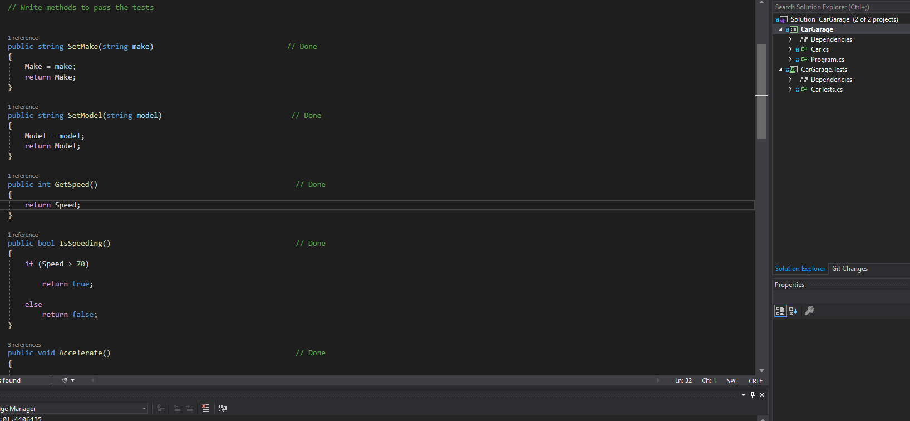

Car Garage
The Car Garage Project was one of my first projects in C# to demonstrate Test-Driven Development. This project was created in Visual Studio 2019. You can view the original code here!

Hello World! I am a 2019 Marketing Major Graduate of Cleveland State University. My Post-Graduation professional experience has taught me the importance of communication and relationship building. In August 2020, I started my LLC to help small businesses with marketing needs. One such organization is in the Software Development Industry. This is the point when I started to learn about coding and began to realize the potential programming has in solving problems! Since then, I made the decision to join We Can Code IT for the Januray 2021 C# Full-Stack Development Cohort.
During my time at We Can Code IT, I worked on a plethora of projects that can help demonstrate and solve professional needs. If you would like to view my latest work, please visit my GitHub account.
As a professional who strives for growth, my projects are very important. Comparing my first projects to what I can create today, I have noticed substantial growth in my skill set.
That is why I chose some of my first basic programs to be featured on my page! There is a common saying in programming. "Be proud of your small victories". I am proud of this early work, while it is not perfect, you are going to want to view the below projects and compare to what I am doing today.
The Car Garage Project was one of my first projects in C# to demonstrate Test-Driven Development. This project was created in Visual Studio 2019. You can view the original code here!
The Guessing Game is one of my first projects working with Pair programming. Created in Visual Studio 2019; The objective was to generate a number. The user has to guess the correct number. You can view the original code here!
The Virtual Pet Simulator was my first project completed with a team of We Can Code IT colleagues. This project was developed in Visual Studio 19 and demonstrates Test-Driven Development, Pair Programming, and Class Creation. You can view the original code here!
Let's Grab a Coffee!